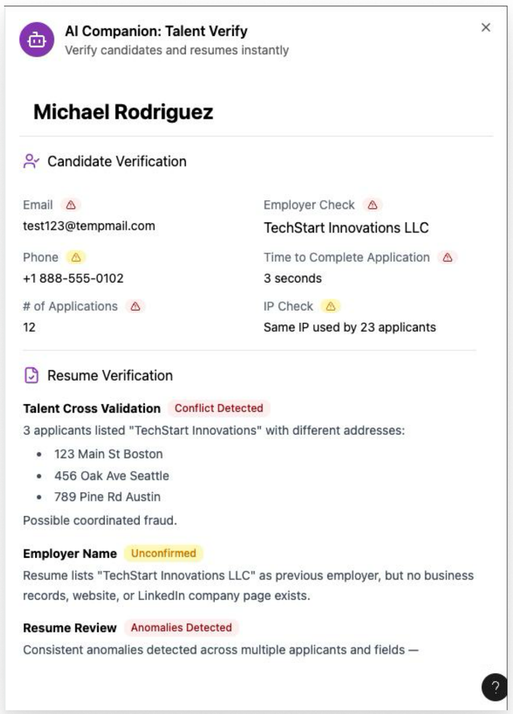

Defining the MVP for Candidate Fraud Detection
Recruiters were seeing more fake candidates: stolen identities, AI-written resumes, and someone else showing up to the interview. Our products had no automated way to check whether a candidate was real, so recruiters were verifying applicants by hand. The team had a prototype of a fraud companion MVP and needed to know which fraud signals were worth having in the MVP.
· a walkthrough of their current process
· reactions to the prototype
At a glance
Problem. Recruiters were spending time verifying candidates by hand, and the team didn't know which fraud signals were meaningful and how they fit into their current workflows.
What I did. Interviewed recruiters about real fraud cases they had handled, then walked them through a prototype of fraud signals and sorted each signal into keep, defer or cut.
Outcome. Decided which signals shipped in the MVP, and which ones recruiters didn't care about as much.
Research questions
How do recruiters check whether a candidate is real today, and which fraud signals would help them most?
- What red flags suggest a candidate is fake or a bot?
- How do recruiters confirm their suspicions today?
- What are their biggest pain points with fake applicants?
- Is the proposed prototype valuable, and how does it compare with their current process?
Approach
One-hour, one-on-one sessions with 5 recruiters from five companies. Each session had two parts.
The prototype changed as the study went on. After each interview, we updated the signals based on feedback and showed the new version to the next participant.

Version 1 Final version
Final versionAdded email age, geolocation, application source, AI-written share and a plagiarism check. Removed the past-employer cross-check.
Decisions that shaped the study
Recruit people who had seen fraud
Most participating companies had direct experience with a fraudulent candidate. They could judge the signals against real cases instead of guessing.
Learn and test in the same session
Part 1 gave participants their own process as a reference point. When they saw the prototype in Part 2, they compared each signal with what they already do, which made their feedback concrete.
End with a decision, not a list of reactions
I sorted every signal into keep, defer or cut, with the reason, so the team could scope the MVP directly from the findings.
What we learned
Recruiters draw a clear line. Using AI to polish a resume is fine. Using AI or another person to pretend to be someone you're not is fraud.
Fraud shows up at every stage, so recruiters check at every stage. They rely on manual checks and gut feel built from experience, and they know they still miss things.
Recruiters can't size the problem. Without data on how often fraud happens, it's hard for them to justify a new tool. A fraud companion that flags fake candidates and keeps a record of this data arms recruiting teams with insights to bring to leadership when necessary.
Signals need to explain themselves. Recruiters wanted to know why a signal fired and how reliable it is, with benchmarks for what normal looks like and a clear severity level. They expected to double-check the tool until it earned their trust.
This became the design principle. The tool surfaces risk; the recruiter makes the call.
What went into the MVP
- Email address and email age verification
- Number of applications
- Time taken to apply
- IP and geolocation checks
- Plagiarism check
- Share of the resume likely AI-written
- Social profile age and consistency with the resume
- Profile photo reverse-image check
Useful, but limited by available data.
- Cross-checking past employers
- Employer name checks
- Resume anomaly flags, such as typos
Unreliable, or wouldn't change what recruiters do.
Conclusion
The research turned a long list of possible signals into a focused MVP. It also confirmed the value of the concept: checks at several stages in one place save recruiters from switching between third-party tools and the ATS, and give them more confidence than any single check.
How confident to be
- Reactions to a prototype, not real use.
- Participants judged signals they hadn't used on live candidates. How often each signal fires, and how often it's wrong, can only be learned once it ships.
- Fraud is hard to count.
- Recruiters themselves couldn't say how big the problem is at their company, so the scale is self-reported.
What I'd do next
- Measure the signals in use. Track how often each one fires and how often recruiters act on it or override it.
- Build the benchmarks recruiters asked for, so a signal can show what normal looks like.